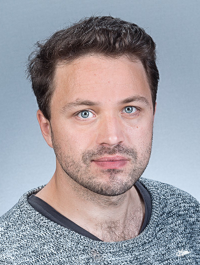

Program
You can download a preliminary program here!
Invited Speakers
Associate Professor Martin S. Andersen (Publications)
Martin Andersen will be giving a general introduction to the subject of optimization to get the summer school of to a great start. Martin’s lectures will cover the basics of optimization and touch upon topics related to his own research. His research focus has been on conic optimization, interior point methods, semidefinite optimization along with implementation of software specifically for convex optimization. His most recent work has been focused on tomographic reconstruction.
Loic Landrieu Researcher at IGN (Publications)
Loic Landrieu is a researcher at IGN, the French National Geographical Institute, in the computer science department MATIS. His research focus concerns exploiting graph structure of spatial data to improve precision and speed of learning methods. In his PhD he focused on learning and optimization structured by large graphs.
Oswin Krause Postdoc DIKU (Publications)
Oswin Krause finished his PhD in 2015 at DIKU and is currently in a postdoc position in DIKU. His focus has primarily been on evolutionary based approaches for optimization, e.g. CMA-ES and multi-objective optimization. His published work also regards RBMs, Deep Learning and Monte Carlo approaches.
Associate Professor Francois Bernard Lauze (Publications)
Francois Lauze has a background in mathematics, where he obtained his PhD in Algebraic Geometry from the University of Nice Sophia Anipolis in 1994. He spent some time in Burkina Faso, until he came to the IT university in Copenhagen and obtained another PhD in 2004. He has worked on variational methods for motion compensated inpainting and motion recovery among other things. His current research is on variational methods, and geometry for Image Analysis (mainly Riemannian, but also some metric geometry). More recently, he has spent some time with inverse problems in photometric stereo and tomographic imaging.
Tao Wu Postdoc at TU Munich (Publications)
Tao Wu has recently focused on approaches for photometric stereo and proximal algorithms on graphs. He teaches the course convex optimization for machine learning and computer vision at TUM. The title of his talk is Proximal Algorithms in Vision and Learning.